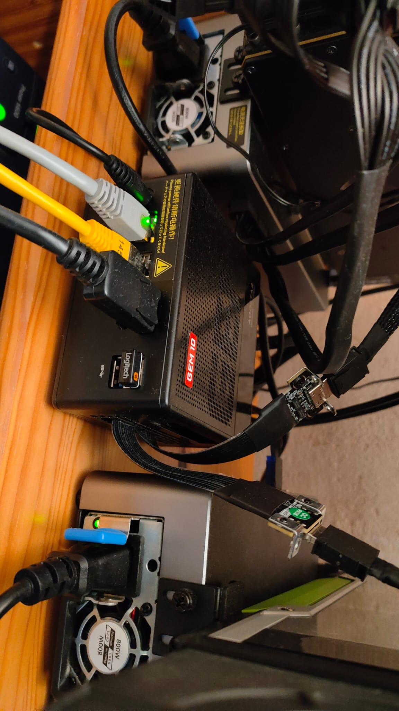
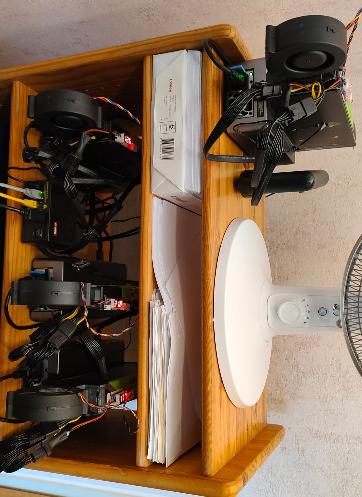

4 GPUs, 120 GB VRAM, 60W idle — how a tiny MiniPC became a 235B inference server
Originally bought as a simple home server. Then the GPU addiction started.
AOOSTAR AG01 eGPU adapter, Tesla P40, connected via OCuLink. Worked immediately. Running 30B models.
I was not done.
AOOSTAR AG02 eGPU adapter with another P40 via USB4. Also worked immediately. The MiniPC handles both OCuLink and USB4 simultaneously — they don't share lanes. Before buying, AOOSTAR support confirmed this would work.
M.2-to-OCuLink adapter (K49SQBK, PCIe 5.0, active chip) plugged into a free internal M.2 slot. To get the cable out: sawed a slot into the fan grille on the side panel. Not pretty, but it works. Connected another AG01 + P40.
AOOSTAR support said M.2-to-OCuLink should work in principle. It did.
Bought a Quadro RTX 8000 (48 GB). It would NOT work over OCuLink — wouldn't even complete POST. Hung at the handshake. P40s worked fine in the same slot.
Tried different BIOS settings, tried the Smokeless BIOS tool to access hidden UEFI variables — nothing helped. Moved it to the AG02 (USB4) where it worked, but that meant losing a P40 slot. Days of frustration.
The problem: GEM 10's BIOS doesn't expose Resizable BAR settings, and the RTX 8000 needs a BAR larger than 256 MB to work over OCuLink. P40s are older and don't care.
ReBarState writes the BAR size directly into UEFI NVRAM. Set it to 4 GB, rebooted — RTX 8000 worked everywhere. OCuLink, M.2 adapter, AG01. Nearly fell off my chair.
Don't bother with the Smokeless BIOS tool if you need ReBAR — go straight to ReBarUEFI.
One more AG01 adapter + M.2-to-OCuLink adapter (second sawed slot in the fan grille). Each connection: PCIe x4, not shared, measured and verified.
| GPU | VRAM | Connection | Adapter |
|---|---|---|---|
| Tesla P40 #1 | 24 GB | OCuLink (external port) | AG01 |
| Tesla P40 #2 | 24 GB | M.2 → OCuLink (sawed grille) | AG01 |
| Tesla P40 #3 | 24 GB | M.2 → OCuLink (sawed grille) | AG01 |
| RTX 8000 | 48 GB | USB4 (external port) | AG02 |
| Total | 120 GB (~115 usable) |

The MiniPC with OCuLink cables running to AG01 adapters and USB4 to the AG02. The two yellow cables are Ethernet — one for LAN, one for direct point-to-point RPC to the development machine.

The complete "server rack" — a wooden shelf with 3x AG01 + 1x AG02 eGPU adapters, each holding a GPU. The desk fan is for the operator, not the GPUs.
The P40s and RTX 8000 are server/workstation cards — passive or blower-style coolers designed for chassis airflow that doesn't exist in an open shelf. Solution: 3D-printed fan adapters with BFB1012HH fans and temperature-controlled PWM fan controllers with probes.
Initially tried higher-CFM fans (BFB1012VH) — unbearably loud and didn't cool any better. The BFB1012HH are the sweet spot: quiet enough to live with, even at full speed. Even at 100% GPU load, nvidia-smi rarely shows temperatures above 50°C.
The eGPU adapters have small built-in fans, but they rarely spin up.
| Component | Price | Source |
|---|---|---|
| AOOSTAR GEM 10 MiniPC | ~€450 | New |
| Tesla P40 #1 + #2 | ~€190 each | AliExpress (+ customs) |
| Tesla P40 #3 | ~€200 | AliExpress (+ customs) |
| RTX 8000 | ~€1,200 | Used, Germany |
| AG01 eGPU adapter (x3) | ~€155 each | AOOSTAR |
| AG02 eGPU adapter (x1) | ~€210 | AOOSTAR |
| M.2-to-OCuLink (x2, K49SQBK, PCIe 5.0) | ~€45-50 each + customs | AliExpress |
| BFB1012HH fans (x4) | ~€10 each | AliExpress |
| PWM fan controllers (x4) | ~€10 each | AliExpress |
| 3D-printed fan adapters | Free | Self-printed |
| Total | ~€3,200 |
| Component | Idle Power |
|---|---|
| Tesla P40 (x3) | ~9-10W each = ~30W |
| RTX 8000 | ~20W |
| MiniPC | ~7-10W |
| Total | ~60W |
A 120 GB VRAM inference server at 60W idle. Try that with a proper server rack.
| Model | Size | Quant | GPUs | Tensor Split | Context | KV Cache | TG tok/s |
|---|---|---|---|---|---|---|---|
| Qwen3-4B Instruct | 4B | Q8_0 | 1 (RTX 8000) | — | 262K | f16 | ~30 |
| Qwen3-14B Base | 14B | Q4_K_M | 1 (RTX 8000) | — | 41K | f16 | ~25 |
| Qwen3-30B-A3B Instruct | 30B MoE | Q8_0 | 2 | — | 262K | f16 | ~35 |
| Qwen3-VL-30B-A3B (Vision) | 30B MoE | Q8_0 | 2 | — | 262K | f16 | ~30 |
| GPT-OSS-120B-A5B | 120B MoE | Q8_K_XL | 2 | 2:1:1:1 | 131K | f16 | ~50 |
| Qwen3-Next-80B-A3B | 80B MoE | Q8_K_XL | 4 | 22:9:9:8 | 262K | f16 | ~35 |
| Qwen3.5-122B-A10B | 122B MoE | Q5_K_XL | 4 | 2:1:1:1 | 262K | f16 | ~21 |
| Nemotron-3-Super-120B | 120B NAS-MoE | Q5_K_XL | 4 | 2:1:1:1 | 874K | f16 | ~17 |
| Qwen3-235B-A22B Instruct | 235B MoE | Q3_K_XL | 4 | 2:1:1:1 | 112K | q8_0 | ~11 |
All models GPU-only (ngl=99), flash-attn, Direct-IO, mlock. Context sizes auto-calibrated by AIfred to maximize available VRAM. The 2:1:1:1 tensor split gives RTX 8000 twice as many layers as each P40 (proportional to VRAM: 48:24:24:24). Qwen3-Next-80B uses a custom 22:9:9:8 split optimized by AIfred's calibration algorithm.
Model lifecycle managed by llama-swap — models auto-swap on request, Direct-IO makes loading near-instant.
If another RTX 8000 shows up at a reasonable price, a P40 gets swapped. The dream of 4x RTX 8000 = 192 GB VRAM is alive — ReBAR is sorted, just need the cards.
For €3,200 you could probably get a 128 GB unified memory MiniPC and call it a day. But I didn't know where this was going when I started. One GPU became two, two became four, and suddenly I'm sawing fan grilles. That's how hobbies work. And honestly, the building was half the fun.